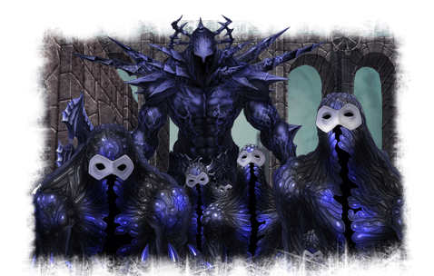
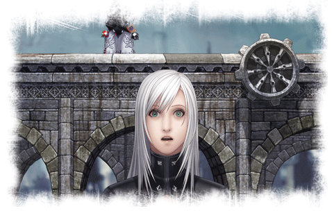

17 |
Consejos |
 |
|
Trata de conocer a tus enemigos y que pautas de ataque son más efectivas contra cada uno. Algunos de ellos, como las sombras gigantes, serán más vulnerables al ser lanzados por los aires, mientras que otros como los sabuesos son más débiles contra ataques en el suelo.
Intenta esquivar siempre los ataques de los enemigos y ponerte a su espada. Es la mejor manera de hacerles bajar la guardia e infligirles daño sin ponerte en peligro.  Cuando te golpeen, pulsa rápidamente salto o esquiva para recuperarte y evitar sufrir daños masivos. Al combatir a tus enemigos en niveles elevados de dificultad, asegúrate siempre de que nunca te enfrentas directamente contra más de uno a la vez. Dado que tus ataques sólo impactan a un adversario, si tratas de atacar de frente a varios enemigos juntos acabarán golpeándote. En lugar de eso, trata de separarlos saltando sobre ellos o esquivándolos. Si todo falla, no dudes en usar Técnicas de Ki.  Agacharse te permite esquivar la mayoría de ataques de rayo o descarga que lanzan tantos tus enemigos como las trampas sobrenaturales. Cuando creas que estas en peligro, no dudes en pulsar rápidamente hacia abajo para evitar sufrir daños. Asegúrate de explorar completamente cada sección de Arca antes de salir de ella. De modo contrario, deberás volver a enfrentarte a todos los enemigos que hubiera en su interior cuando quieras regresar. |
 |
 |